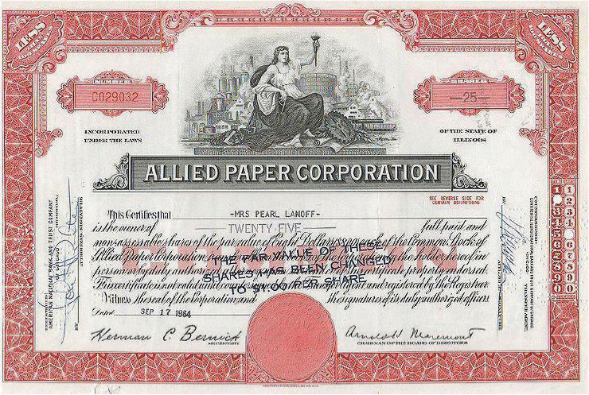
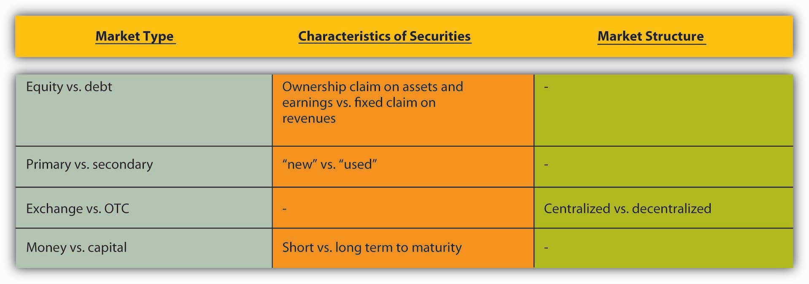
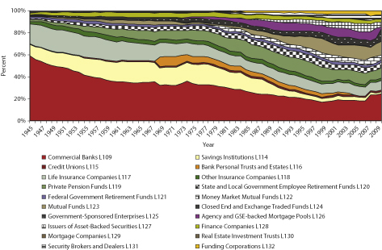
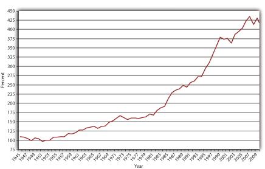

By the end of this chapter, students should be able to:
A ubiquitous stereotype portrays financiers as evil, brilliant, or both. While instances of uberintelligent, unfathomly selfish financiers can be adduced, most people working in the financial services sector are normal folks and not unusually greedy or smart. To understand the financial system in all its glorious complexity, readers need to expunge stereotypes of financiers from their minds. One way to do that is to cultivate critiques of media portrayals of all things financial.
Ever notice that movies and books tend to portray financiers as evil and powerful monsters, bent on destroying all that decent folks hold dear for the sake of a fast buck? In his best-selling 1987 novel Bonfire of the Vanities,www.amazon.com/Bonfire-Vanities-Tom-Wolfe/dp/0553275976 for example, Tom Wolfe depicts Wall Street bond trader Sherman McCoy (played by Tom Hanks in the movie version)www.imdb.com/title/tt0099165 as a slimy “Master of the Universe”: rich, powerful, and a complete butthead. Who could forget Danny DeVitowww.imdb.com/name/nm0000362 as the arrogant, donut-scarfing “Larry the Liquidator” juxtaposed against the adorable, old factory owner Andrew Jorgenson (played by Gregory Peck)www.imdb.com/name/nm0000060 in Other People’s Money?www.imdb.com/title/tt0102609 And moviegoers have now been treated to two flicks called Wall Street,1987: www.imdb.com/title/tt0094291; 2010: www.imdb.com/title/tt1027718 which revile the nation’s largest and most important financiers and financial firms under thinly disguised names and circumstances.
Bashing finance and financiers is not a passing fad; you may recall the unsavory Shylock character from Shakespeare’s play The Merchant of Venice.www.bibliomania.com/0/6/3/1050/frameset.html Even the Christmas classic It’s a Wonderful Lifewww.nndb.com/films/309/000033210 contains at best a dual message. In the film, viewers learn that George Bailey, the lovable president of the local building and loan association (a type of community bank) played by Jimmy Stewart, saved Bedford Falls from the clutches of a character portrayed by Lionel Barrymore, actress Drew Barrymore’s grand-uncle, the ancient and evil financier Henry F. Potter. (No relation to Harry, I’m sure.) That’s hardly a ringing endorsement of finance.video.google.com/videoplay?docid=4820768732160163488
Truth be told, some financiers have done bad things. Then again, so have members of every occupational, geographical, racial, religious, and ethnic group on the planet. But most people, most of the time, are pretty decent, so we should not malign entire groups for the misdeeds of a few, especially when the group as a whole benefits others. Financiers and the financial systems they inhabit benefit many people. The financial system does so much good for the economy, in fact, that some people believe that financiers are brilliant rocket scientists or at least “the smartest guys in the room.”en.wikipedia.org/wiki/The_Smartest_Guys_in_the_Room This positive stereotype, however, is as flawed as the negative one. While some investment bankers, insurance actuaries, and other fancy financiers could have worked for NASA, they are far from infallible. The financial crisis that began in 2007 reminds us, once again, that complex mathematical formulas are less useful in economics (and other social sciences) than in astrophysics. Financiers, like politicians, religious leaders, and, yes, college professors, have made colossal mistakes in the past and will undoubtedly do so again in the future.
So rather than lean on stereotypes, this chapter will help you to form your own view of the financial system. In the process, it will review the entire system. It’s well worth your time and effort to read this chapter carefully because it contains a lot of descriptive information and definitions that will help you later in the text, as well as later in life.
A financial systemA densely interconnected network of financial intermediaries, facilitators, and markets that allocates capital, shares risks, and facilitates intertemporal trade. is a densely interconnected network of intermediaries, facilitators, and markets that serves three major purposes: allocating capital, sharing risks, and facilitating all types of trade, including intertemporal exchange. That sounds mundane, even boring, but it isn’t once you understand how important it is to human welfare. The material progress and technological breakthroughs of the last two centuries, ranging from steam engines, cotton gins, and telegraphs, to automobiles, airplanes, and telephones, to computers, DNA splicing, and cell phones, would not have been possible without the financial system. Efficiently linking borrowers to lenders is the system’s main function. Borrowers include inventors, entrepreneurs, and other economic agents, like domestic households, governments, established businesses, and foreigners, with potentially profitable business ideas (positive net present value projectsA project likely to be profitable at a given interest rate after comparing the present values of both expenditures and revenues.) but limited financial resources (expenditures > revenues). Lenders or savers include domestic households, businesses, governments, and foreigners with excess funds (revenues > expenditures). The financial system also helps to link risk-averse entities called hedgers to risk-loving ones known as speculators. As Figure 2.1 "The financial system at work for you" illustrates, you are probably already deeply embedded in the financial system as both a borrower and a saver.
Figure 2.1 The financial system at work for you
Occasionally, people and companies, especially small businesses or ones that sell into rapidly growing markets, have enough wealth (a stock) and income (a flow) to implement their ideas without outside help by plowing back profits (aka internal financeFinancing that comes from the company itself, the plowing of profits back into the business.). Most of the time, however, people and firms with good ideas do not have the savings or cash needed to draw up blueprints, create prototypes, lease office or production space, pay employees, obtain permits and licenses, or suffer the myriad risks of bringing a new or improved good to market. Without savings, a rich uncle or close friend, or some other form of external financeObtaining short- or long-term funding from outside sources (those external to the company)., people remain wannabe entrepreneurs and companies cannot complete their projects. That should concern you because the world is a poorer place for it.www.innovation-america.org/archive.php?articleID=79 It should also concern you because many students need loans in order to afford college and thereby increase their future earnings.
Why do we need a financial system? Why can’t individuals and companies simply borrow from other individuals and companies when they need to? Lending, like supplying many other types of goods, is most efficiently and cheaply conducted by specialists, companies that do only one thing (or a couple of related activities) very well because they have much practice doing it and because they tap economies of scale. The fixed costs of making loans—advertising for borrowers, buying and maintaining computers, leasing suitable office space, writing up contracts, and the like—are fairly substantial. To recoup those fixed costs, to drive them toward insignificance, lenders have to do quite a volume of business. Little guys usually just can’t be profitable. This is not to say, however, that bigger is always better, only that to be efficient financial companies must exceed minimum efficient scaleThe smallest a business can be and still remain efficient and/or profitable..
Finance also suffers from a peculiar problem that is not easily overcome by just anybody. Undoubtedly, you’ve already encountered the concept of opportunity costs, the nasty fact that to obtain X you must give up Y, that you can’t have your cake and eat it too. You may not have heard of asymmetric information, another nasty fact that makes life much more complicated. Like scarcityThe finite availability of resources coupled with the infinite demand for them; the fact that goods are not available in sufficient quantity to satisfy everyone’s wants., asymmetric information inheres in nature, the devil incarnate. That is but a slight exaggeration. When a seller (borrower, a seller of securities) knows more than a buyer (lender or investor, a buyer of securities), only trouble can result. Like the devil in Dante’s Inferno,www.fullbooks.com/Dante-s-Inferno.html this devil has two big ugly heads, adverse selectionThe fact that the least desirable borrowers and those who seek insurance most desire loans and insurance policies., which raises Cain before a contract is signed, and moral hazardAny postcontractual change in behavior that injures other parties to the contract., which entails sinning after contract consummation. (Later, we’ll learn about a third head, the principal-agency problem, a special type of moral hazard.)
Due to adverse selection, the fact that the riskiest borrowers are the ones who most strongly desire loans, lenders attract sundry rogues, knaves, thieves, and ne’er-do-wells, like pollen-laden flowers attract bees (Natty Lightwww.urbandictionary.com/define.php?term=natty+light attracts frat boys?). If they are unaware of that selection bias, lenders will find themselves burned so often that they will prefer to keep their savings under their mattresses rather than risk lending it. Unless recognized and effectively countered, moral hazard will lead to the same suboptimal outcome. After a loan has been made, even good borrowers sometimes turn into thieves because they realize that they can gamble with other people’s money. So instead of setting up a nice little ice cream shop with the loan as they promised, a disturbing number decide instead to try to get rich quick by taking a quick trip to Vegas or Atlantic Citywww.pickeringchatto.com/index.php/pc_site/monographs/gambling_on_the_american_dream for some potentially lucrative fun at the blackjack table. If they lose, they think it is no biggie because it wasn’t their money.
One of the major functions of the financial system is to tangle with those devilish information asymmetries. It never kills asymmetry, but it reduces its influence, intermediaries by screening insurance and credit applicants and monitoring them thereafter, and markets by providing price information and analysis. With asymmetric information thus scotched, businesses and other borrowers can obtain funds and insurance cheaply enough to allow them to become more efficient, innovate, invent, and expand into new markets. By providing relatively inexpensive forms of external finance, financial systems make it possible for entrepreneurs and other firms to test their ideas in the marketplace. They do so by eliminating, or at least reducing, two major constraints on liquidityThe ease, speed, and cost of selling an asset. and capitalIn this context, long-term financing., or the need for short-term cash and long-term dedicated funds. They reduce those constraints in two major ways: directly (though often with the aid of facilitatorsIn this context, businesses that help markets to function more efficiently.) via marketsInstitutions where the quantity and price of goods are determined. and indirectly via intermediariesBusinesses that connect investors to entrepreneurs via various financial contracts, like checking accounts and insurance policies.. Another way to think about that is to realize that the financial system makes it easy to trade intertemporally, or across time. Instead of immediately paying for supplies with cash, companies can use the financial system to acquire what they need today and pay for it tomorrow, next week, next month, or next year, giving them time to produce and distribute their products.
You might think that you would never stoop so low as to take advantage of a lender or insurer. That may be true, but financial institutions are not worried about you per se; they are worried about the typical reaction to asymmetric information. Besides, you may not be as pristine as you think. Have you ever done any of the following?
If so, you have taken advantage (or merely tried to, if you were caught) of asymmetric information.
Financial instrumentsContracts for the payment of money; securities., sometimes called financial securitiesAnother term for financial instruments., are legal contracts that detail the obligations of their makersThe issuers or initial sellers of a financial instrument; the entities promising payment., the individuals, governments, or businesses that issue (initially sell) them and promise to make payment, and the rights of their holderThe owners or possessors of a financial instrument; the entities entitled to payment.s, the individuals, governments, or businesses that currently own them and expect to receive payment. Their major function is to specify who owes what to whom, when or under what conditions payment is due, and how and where payment should be made.
Financial instruments come in three major varieties—debtA financial instrument in which a type of maker called a borrower promises to pay a fixed sum on a fixed date to a holder called a lender (or bondholder)., equityA financial instrument in which a type of maker called an issuer promises to pay a portion of its profits to a holder called an owner (or stockholder or shareholder)., and hybridA financial instrument that has some of the characteristics of debt and some of the characteristics of equity.. Debt instruments, such as bonds, indicate a lender–borrower relationship in which the borrower promises to pay a fixed sum and interest to the lender at a specific date or over some period of time. Equity instruments, such as stocks, represent an ownership stake in which the holder of the instrument receives some portion of the issuerThe maker or initial seller of a financial instrument.’s profits. Hybrid instruments, such as preferred stock, have some of the characteristics of both debt and equity instruments. Like a bond, preferred stock instruments promise fixed payments on specific dates but, like a common stock, only if the issuer’s profits warrant. Convertible bonds, by contrast, are hybrid instruments because they provide holders with the option of converting debt instruments into equities.
Today, many financial instruments are merely electronic accounting entries—numbers in a spreadsheet linked to a contract. In the past, however, they took corporeal form as in the case of stock certificates, like that pictured in Figure 2.2 "Allied Paper stock certificate, 1964".
Figure 2.2 Allied Paper stock certificate, 1964
Compliments Wikimedia Commons: http://wikimediafoundation.org/wiki/File:Allied_Paper_Corporation_Stock_Certificate_1964.jpg.
How would you characterize financial instruments in the following forms?
The first instrument is a debt because Joe promises to pay Jane a fixed sum on a certain date. Joe is a simple borrower and Jane, his creditor/lender. The second instrument is an equity because Joe promises to pay Jane a percentage of profit, making Jane a part owner of the business. The third instrument is a hybrid because Joe promises to pay Jane a fixed sum but only if his taco stand is profitable. Parallel to the first instrument, Jane will receive a fixed sum on a fixed date (as in a loan), but like the second instrument, payment of the sum is contingent on the taco stand’s profits (as in an ownership stake).
Financial markets come in a variety of flavors to accommodate the wide array of financial instruments or securities that have been found beneficial to both borrowers and lenders over the years. Primary markets are where newly created (issued) instruments are sold for the first time. Most securities are negotiable. In other words, they can be sold to other investors at will in what are called secondary markets. Stock exchanges, or secondary markets for ownership stakes in corporations called stocks (aka shares or equities), are the most well-known type, but there are also secondary markets for debt, including bonds (evidences of sums owed, IOUs), mortgages, and derivativesDerivatives are complex financial instruments, the prices of which are based on the prices of underlying assets, variables, or indices. Some investors use them to hedge (reduce) risks, while others (speculators) use them to increase risks. and other instruments. Not all secondary markets are organized as exchanges, centralized locations, like the New York Stock Exchange or the Chicago Board of Trade, for the sale of securities. Some are over-the-counter (OTC) markets run by dealersBusinesses that buy and sell securities continuously at bid and ask prices, profiting from the difference or spread between the two prices. connected via various telecom devices (first by post and semaphore [flag signals], then by telegraph, then telephone, and now computer). Completely electronic markets have gained much ground in recent years and now dominate most trading.“Stock Exchanges: The Battle of the Bourses,” The Economist (31 May 2008), 77–79.
Money markets are used to trade instruments with less than a year to maturity (repayment of principal). Examples include the markets for T-bills (Treasury bills or short-term government bonds), commercial paper (short-term corporate bonds), banker’s acceptances (guaranteed bank funds, like a cashier’s check), negotiable certificates of deposit (large-denomination negotiable CDs, called NCDs), Fed funds (overnight loans of reserves between banks), call loans (overnight loans on the collateral of stock), repurchase agreements (short-term loans on the collateral of T-bills), and foreign exchange (currencies of other countries).
Securities with a year or more to maturity trade in capital markets. Some capital market instruments, called perpetuities, never mature or fall due. Equities (ownership claims on the assets and income of corporations) and perpetual interest-only loans are prime examples. (Some interest-only loans mature in fifteen or thirty years with a so-called balloon payment, in which the principal falls due all at once at the end of the loan.) Most capital market instruments, including mortgages (loans on real estate collateralProperty pledged as security for the repayment of a loan.), corporate bonds, government bonds, and commercial and consumer loans, have fixed maturities ranging from a year to several hundred years, though most capital market instruments issued today have maturities of thirty years or less. Figure 2.4 "Types of financial markets" briefly summarizes the differences between various types of financial markets.
Figure 2.4 Types of financial markets
Derivatives contracts trade in a third type of financial market. Derivatives allow investors to spread and share a wide variety of risks, from changes in interest rates and stock market indicesquote.yahoo.com/m1?u to undesirable weather conditionswww.cme.com/trading/prd/weather/index.html (too sunny for farmers, too rainy for amusement parks, too cold for orange growers, too hot for ski resorts). Financial derivatives are in some ways even more complicated than the derivatives in calculus, so they are discussed in detail in a separate chapter.
Some call financial markets “direct finance,” though most admit the term is a misnomer because the functioning of the markets is usually aided by one or more market facilitators, including brokers, dealers, brokerages, and investment banks. Brokers facilitate secondary markets by linking sellers to buyers of securities in exchange for a fee or a commission, a percentage of the sale price. Dealers “make a market” by continuously buying and selling securities, profiting from the spread, or the difference between the sale and purchase prices. (For example, a dealer might buy a certain type of bond at, say, $99 and resell it at $99.125, ten thousand times a day.) Brokerages engage in both brokering and dealing and usually also provide their clients with advice and information. Investment banks facilitate primary markets by underwriting (buying for resale to investors) stock and bond offerings, including initial public offerings (IPOs) of stocks, and by arranging direct placementA sale of financial securities, usually bonds, via direct negotiations with buyers, usually large institutional investors like insurance and investment companies. of bonds. Sometimes investment banks act merely as brokers, introducing securities issuers to investors, usually institutional investors like the financial intermediaries discussed below. Sometimes they act as dealers, buying the securities themselves for later (hopefully soon!) resale to investors. And sometimes they provide advice, usually regarding mergerA merger occurs when two or more extant business firms combine into one through a pooling of interests or through purchase. and acquisitionWhen one company takes a controlling interest in another; when one business buys another.. Investment banks took a beating during the financial crisis that began in 2007. Most of the major ones went bankrupt or merged with large commercial banks. Early reports of the death of investment banking turned out to be premature, but the sector is depressed at present; two large ones and numerous small ones, niche players called boutiques, remain.“American Finance: And Then There Were None. What the death of the investment bank means for Wall Street,” The Economist (27 September 2008), 85–86.
In eighteenth-century Pennsylvania and Maryland, people could buy real estate, especially in urban areas, on so-called ground rent, in which they obtained clear title and ownership of the land (and any buildings or other improvements on it) in exchange for the promise to pay some percentage (usually 6) of the purchase price forever. What portion of the financial system did ground rents (some of which are still being paid) inhabit? How else might ground rents be described?
Ground rents were a form of market or direct finance. They were financial instruments or, more specifically, perpetual mortgages akin to interest-only loans.
Financial markets are increasingly international in scope. Integration of transatlantic financial markets began early in the nineteenth century and accelerated after the mid-nineteenth-century introduction of the transoceanic telegraph systems. The process reversed early in the twentieth century due to both world wars and the Cold War; the demise of the gold standard;John H. Wood, “The Demise of the Gold Standard,” Economic Perspectives (Nov. 1981): 13-23. and the creation of Bretton Woods, a system of fixed exchange rates, discretionary monetary policy, and capital immobility.economics.about.com/od/foreigntrade/a/bretton_woods.htm (We’ll explore these topics and a related matter, the so-called trilemma, or impossible trinity, in another chapter.) With the end of the Bretton Woods arrangement in the early 1970s and the Cold War in the late 1980s/early 1990s, financial globalization reversed course once again. Today, governments, corporations, and other securities issuers (borrowers) can sell bonds, called foreign bonds, in a foreign country denominated in that foreign country’s currency. (For example, the Mexican government can sell dollar-denominated bonds in U.S. markets.) Issuers can also sell Eurobonds or Eurocurrencies, bonds issued (created and sold) in foreign countries but denominated in the home country’s currency. (For example, U.S. companies can sell dollar-denominated bonds in London and U.S. dollars can be deposited in non-U.S. banks. Note that the term Euro has nothing to do with the euro, the currency of the European Union, but rather means “outside.” A Euro loan, therefore, could be a loan denominated in euro but made in London, New York, Tokyo, or Perth.) It is now also quite easy to invest in foreign stock exchanges,www.foreign-trade.com/resources/financel.htm many of which have grown in size and importance in the last few years, even if they struggled through the panic of 2008.
To purchase the Louisiana Territory from Napoleon in 1803, the U.S. government sold long-term, dollar-denominated bonds in Europe. What portion of the financial system did those bonds inhabit? Be as specific as possible.
Those government bonds were Eurobonds because the U.S. government issued them overseas but denominated them in U.S. dollars.
Like financial markets, financial intermediaries are highly specialized. Sometimes called the indirect method of finance, intermediaries, like markets, link investors/lenders/savers to borrowers/entrepreneurs/spenders but do so in an ingenious way, by transforming assetsAssets are “things owned” as opposed to liabilities, which are “things owed.”. Unlike facilitators, which, as we have seen, merely broker or buy and sell the same securities, intermediaries buy and sell instruments with different riskThe probability of loss., returnThe percentage gain or loss from an investment., and/or liquidity characteristics. The easiest example to understand is that of a bank that sells relatively low risk (which is to say, safe), low return, and highly liquid liabilitiesLiabilities are “things owed” to others, as opposed to assets, which are “things owned.”, called demand deposits, to investors called depositors and buys the relatively risky, high return, and nonliquid securities of borrowers in the form of loans, mortgages, and/or bonds. Note, too, that investor–depositors own claims on the bank itself rather than on the bank’s borrowers.
Financial intermediaries are sometimes categorized according to the type of asset transformations they undertake. As noted above, depository institutions, including commercial banks, savings banks, and credit unions, issue short-term deposits and buy long-term securities. Traditionally, commercial banks specialized in issuing demand, transaction, or checking deposits and making loans to businesses. Savings banks issued time or savings deposits and made mortgage loans to households and businesses, while credit unions issued time deposits and made consumer loans. (Finance companies also specialize in consumer loans but are not considered depository institutions because they raise funds by selling commercial paper, bonds, and equities rather than by issuing deposits.)
Due to deregulationGenerally, deregulation refers to any industry where regulations are eliminated or significantly reduced. In this context, deregulation refers to a series of regulatory reforms of the financial industry undertaken in the 1980s and 1990s., though, the lines between different types of depository institutions have blurred in recent years. Ownership structure, charter terms, and regulatory agencies now represent the easiest way to distinguish between different types of depository institutions. Almost all commercial and many savings banks are joint-stock corporations. In other words, stockholders own them. Some savings banks and all credit unions are mutual corporations and hence are owned by those who have made deposits with them.
Insurance companies are also divided between mutual and joint-stock corporations. They issue contracts or policies that mature or come due should some contingency occur, which is a mechanism for spreading and sharing risks. Term life insurance policies pay off if the insured dies within the contract period, while life annuities pay off if the insured is still alive. Health insurance pays when an insured needs medical assistance. Property or casualty insurance, such as fire or automobile insurance, comes due in the event of a loss, like a fire or an accident. Liability insurance pays off when someone is sued for a tort (damages). Insurers invest policyholder premiumsIn this context, a sum paid for an insurance contract. in stocks, corporate and government bonds, and various money market instruments, depending on the nature of the contingencies they insure against. Life insurance companies, for example, invest in longer-term assets than automobile or health insurers because, on average, life insurance claims occur much later than property or health claims. (In the parlance of insurance industry insiders, life insurance has a much longer “tail” than property insurance.)
The third major type of intermediary is the investment company, a category that includes pension and government retirement funds, which transform corporate bonds and stocks into annuities, and mutual funds and money market mutual funds, which transform diverse portfolios of capital and money market instruments, respectively, into nonnegotiableNontransferable to third parties. but easily redeemableIn this context, changeable into cash money by the fund. “shares.”
As Figure 2.5 "Share of total U.S. financial assets, year-end, 1945–2010" shows, the relative importance of commercial banks and life insurance companies has waned since World War II due to the proliferation of additional investment options. As Figure 2.6 "Assets of financial intermediaries, selected years, 1945–2005" shows, their decline is relative only; the assets of all major types of intermediaries have grown rapidly over the last six decades. The figures are in current dollars, or dollars not adjusted for inflation, and the U.S. economy has grown significantly since the war, in no small part due to the financial system. Nevertheless, as shown in Figure 2.7 "Financial assets to gross domestic product (GDP), 1945–2010", the assets of financial intermediaries have grown steadily as a percentage of GDPGDP, or gross domestic product, is one of several different measures of aggregate output, the total value of all final goods and services produced in an economy..
Figure 2.5 Share of total U.S. financial assets, year-end, 1945–2010
Figure 2.6 Assets of financial intermediaries, selected years, 1945–2005
Figure 2.7 Financial assets to gross domestic product (GDP), 1945–2010
Financial markets have exhibited similar growth. For example, the Dow Jones Industrial Average (DJIA),www.djindexes.com/mdsidx/index.cfm?event=showAverages a mechanism for tracking the prices of the shares of the nation’s most important corporations, grew from less than 200 at the end of World War II to just shy of 700 when John F. Kennedy took office in 1961, to around 1,000 when Ronald Reagan became president twenty years later, to over 3,200 in 1992 and over 10,000 by 1999.www.measuringworth.com/datasets/DJA/index.php Trading volumes on the New York Stock Exchangewww.nyse.com and the NASDAQwww.nasdaq.com have likewise soared. In 1945, daily trading volumes rarely exceeded 2 million shares. By 1975, 10 million shares was considered a slow day. By 2005, over 1 billion shares were regularly traded each day.
Why do investors (savers) sometimes choose to invest in intermediaries rather than directly in financial markets? Why do borrowers sometimes choose to reduce their liquidity and capital constraints via intermediaries and sometimes via markets? Markets and intermediaries often fulfill the same needs, though in different ways. Borrowers/securities issuers typically choose the alternative with the lowest overall cost, while investors/savers choose to invest in the markets or intermediaries that provide them with the risk-return-liquidity trade-off that best suits them.
Return is how much an investor gets from owning an asset. It can be positive (yipee!) or negative (d’oh!). Risk is variability of return. A “risky” asset might pay off big or be a big loser. A “safe” asset will probably return something mundane and expected. Liquidity is the speed with which an asset can be sold at something close to its real market value. A highly “liquid” asset, like a Federal Reserve note, can be exchanged instantaneously at no cost. A “liquid” asset, like a Treasury bond, can be sold in a few minutes for a minimal fee. An “illiquid” asset, like a house in a depressed neighborhood, may take months or years to sell and cost several percent of its value to unload.
Risk is a bad thing, while return and liquidity are good things. Therefore, every saver wants to invest in riskless, easily saleable investments that generate high returns. Of course, such opportunities occur infrequently because investors bid up their prices, thus reducing their returns. (As we’ll see in another chapter, the higher the price of an investment, the lower its return, ceteris paribusAll else equal..) To keep returns high, some investors will be willing to give up some liquidity or to take on more risk. For example, they might buy securities not backed by collateral (assets like buildings, businesses, or safe financial instruments like T-bills that the borrower promises to forfeit in case of defaultNon- or partial payment of a loan, bond, or other payment obligation.). As a result of the competition between investors, and between borrowers, the financial system offers instruments with a wide variety of characteristics, ranging from highly liquid, very safe, but low-return T-bills and demand deposits, to medium-risk, medium-liquidity, medium-return mortgages, to risky but potentially lucrative and easily sold derivatives like put options and foreign exchange futures contracts.
Investors care about more than risk, return, and liquidity, but generally other considerations are secondary. For example, investors will pay more for investments with fixed redemption dates rather than ones that can be called (repaid) at the borrower’s option because fixed redemption dates reduce investors’ uncertainty. They will also sometimes pay a little more for instruments issued by environmentally or socially conscious companies and countries and less for those issued by dirty, rude ones.
In the fall of 2006, interest rates on conventional thirty-year home mortgages without a prepayment penalty (a fee charged to the borrower if he/she repays the principal early) were about 6.5 percent per year. But mortgages with otherwise identical terms that contained a prepayment penalty for the first seven years of the loan could be had for 6.25 percent per year. Why was that the case?
In addition to risk, return, and liquidity, investors are concerned about the uncertainty of repayment terms. They are willing to receive a lower return (ceteris paribus, of course) in exchange for a guarantee that a loan will not be repaid for a significant period of time.
As noted above, borrowers also compete with each other for the lowest cost methods of meeting their external financing needs. Obviously, borrowers want to pay as little for funds as possible and would like nothing better than to borrow huge sums forever, unconditionally, and at zero interest. Nobody wants to lend on those terms, though, so borrowers compete with each other for funds by offering investors higher returns, less risk, or more liquid instruments. They use whichever part of the financial system, markets or intermediaries, offers them the best deal. A company may sell commercial paper in the money market rather than obtain a bank loan, for example, if it is large enough and well-known enough to interest enough investors and market facilitators. A smaller, newer company, though, may find that a bank loan is much easier and cheaper to obtain.
Like investors, borrowers are concerned about the total net costs (all costs plus all benefits) of different types of finance. One big consideration is government and self-regulation. Compared with most other parts of modern capitalist economies, the financial system is relatively heavily regulated. Regulators like the Securities and Exchange Commission (SEC, which oversees exchanges and OTC markets), the New York Stock Exchange (NYSE, which oversees itself as an SRO or self-regulating organizationen.wikipedia.org/wiki/Self-regulatory_organization), and the Commodities Futures Trading Commission (CFTC, which oversees futures market exchanges) monitor and regulate financial markets. Other regulators, including the Office of the Comptroller of the Currency (which oversees federally chartered commercial banks), the Federal Deposit Insurance Corporation (FDIC, which oversees almost all depositories), and sundry state banking and insurance commissions, monitor financial intermediaries. Companies that wish to avoid direct regulatory scrutiny due to its high cost tend to use intermediaries rather than markets. For example, instead of selling shares to the public, which would require following the many rules of the SEC and the NYSE (or other exchange or OTC market), a company might decide that it would be cheaper to obtain a long-term bank loan or sell bonds to life insurers, mutual funds, and other institutional investors in a direct placement.
Regulators serve four major functions. First, they try to reduce asymmetric information by encouraging transparencyIn general, the opposite of opacity. In this context, transparency means a relatively low degree of asymmetric information.. That usually means requiring both financial market participants and intermediaries to disclose accurate information to investors in a clear and timely manner. A second and closely related goal is to protect consumers from scammers, shysters, and assorted other grifters, as well as from the failure of honest but ill-fated or poorly run institutions. They do the latter by directly limiting the types of assets that various types of financial institutions can hold and by mandating minimum reserve and capitalization levels. Third, they strive to promote financial system competition and efficiency by ensuring that the entry and exit of firms is as easy and cheap as possible, consistent with their first two goals. For example, new banks can form but only after their incorporators (founders) and initial executives have been carefully screened. Insurance companies can go out of business (exit) but only after they have made adequate provision to fulfill their promises to policyholders.
Finally, regulators also try to ensure the soundness of the financial system by acting as a lender of last resortDuring a financial crisis or panic, a lender of last resort makes loans when no one else will., mandating deposit insuranceInsurance that pays off if a bank defaults on its deposit liabilities., and limiting competition through restrictions on entry and interest rates. The first two forms of regulation are relatively uncontroversial, although many believe that the lender of last resort function should not be combined with a too big to fail (TBTF) policy, and that deposit insurance can increase risk-taking by bankers. Limiting competition is a highly controversial means of ensuring safety because it extends privileges to existing institutions over new ones. Little surprise, then, that the regulated companies themselves are often the strongest supporters of that type of regulation!
For decades, the Federal Reserve capped the interest rates that banks could pay on checking deposits at zero and the interest rates that they could pay on time or savings deposits at around 6 percent per year. What was the intended economic effect of those restrictions? Why didn’t existing banks lobby for their repeal until the Great InflationPeacetime inflation rates in the United States in the 1970s were higher than any time before or since. of the 1970s?
The restrictions were put in place to limit competition among banks, allowing them to be profitable without assuming too much risk. Existing banks were more than happy to reap relatively riskless profits until inflation exceeded the interest rates that they could legally pay. At that point, disintermediation was rampant. In other words, many people pulled their money out of banks and put them directly into the market, via money market and stock and bond mutual funds.
Anonymous, Finance for Managers. Cambridge: Harvard Business School Press, 2002.
Barth, James, Gerard Caprio, and Ross Levine. Rethinking Bank Regulation: Till Angels Govern. New York: Cambridge University Press, 2008.
Bebczuk, Ricardo. Asymmetric Information in Financial Markets: Introduction and Applications. New York: Cambridge University Press, 2003.
Fabozzi, Frank. The Handbook of Financial Instruments. Hoboken, NJ: John Wiley and Sons, 2002.
Landier, Augustin, and Vinay Nair. Investing for Change: Profit from Responsible Investment. New York: Oxford University Press, 2008.
Tyson, Eric. Personal Finance for Dummies, 5th ed. Hoboken, NJ: John Wiley and Sons, 2006.